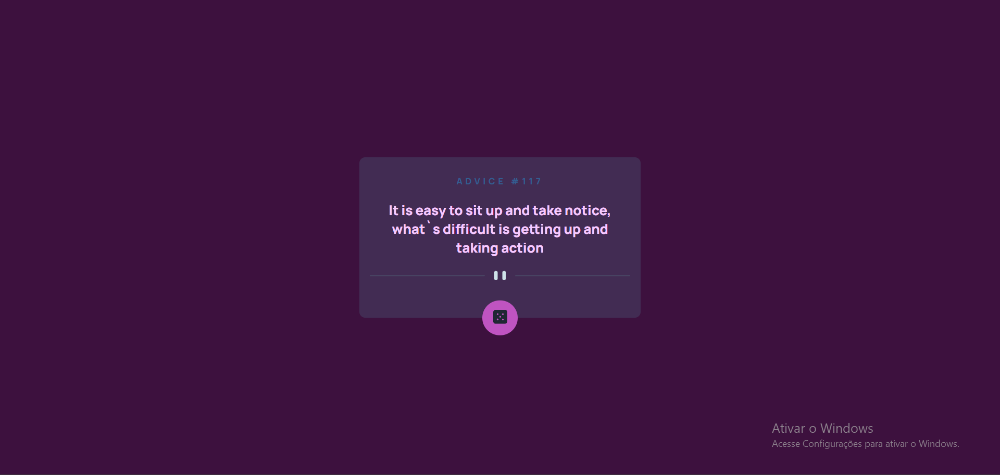

Habilidades
HTML5
- Manipulação de links e imagens;
- Criação de estruturas como listas e tabelas;
- Desenvolvimento de formulários com input, select, textarea e button;
- Tags semânticas e uso de divs;
- Incorporação de ícones, emojis, áudios e vídeos.
CSS3
- Espaçamento e posicionamento dos elementos;
- Seleção de fontes, animações e unidades de medida;
- Utilização da responsividade e manipulação de variáveis;
- Aplicação de cores, textos, listas, links e backgrounds;
- Uso de pseudo-classes, pseudo-elementos;
- Técnicas de centralização utilizando o flexbox e grid.
Git
- Hospedar meus projetos no GitHub através do terminal do Git e através do terminal integrado ao VS Code;
- Clonar repositórios de outros desenvolvedores pelo terminal.
GitHub
- Domino a hospedagem de repositórios no GitHub Pages;
- Compartilhar meu trabalho e acompanhar projetos de diversos desenvolvedores;
- E mantenho-o consistentemente atualizado quando desenvolvo novos projetos.
JavaScript
- Uso do console;
- Manipulação de arrays e objetos;
- Aplicação de estruturas de repetição e condicionais;
- Funções como hoisting, anônimas, arrow functions e higher order functions;
- Manipulação de DOM, promises, async e await;
- Integrações com APIs, uso do fetch para requisições HTTP e manipulação de JSON;
- Gerenciamento de pacotes npm e importação/exportação de módulos;
- Conceitos como filter, map, reduce, operadores spread e rest, setInterval e setTimeout.
React
- Criação de projetos utilizando a biblioteca React com Vite;
- Utilização de classes e funções;
- Conceitos como props, default, chave key, eventos, estados, componentes stateless e statefull;
- Ciclo de vida dos componentes;
- Utilização de hooks de estado, efeito, customizados e hook form para criação de formulários;
- Implementação de rotas, estilização com styled components e React Query para gerenciamento de dados;
- Consumir APIs utilizando o Axios.
Meus projetos
Projeto Gerador de Conselhos
Desenvolvi este projeto que gera conselhos em inglês com um simples clique, utilizando HTML, CSS, JavaScript e API para tornar a experiência do usuário mais interativa.
Projeto API do GitHub
Meu projeto tem como foco pesquisar usuários do GitHub, exibindo detalhes como foto, nome, descrição e repositórios. Utilizei HTML, CSS, JavaScript e API para criar uma interface funcional.
Projeto API de Previsão do Tempo

Criei uma aplicação que mostra a temperatura atual da cidade, juntamente com o ícone e a descrição do clima, a umidade em porcentagem e a velocidade do vento em quilômetros por hora. Utilizei HTML, CSS, JavaScript e API para fornecer informações precisas sobre o clima
Projeto Pedido de Namoro
Em um projeto divertido, desenvolvi uma experiência interativa de pedido de namoro onde o botão "no" se afasta ao ser clicado, tornando difícil recusar. Além disso, adicionei um botão para alternar entre os temas claro e escuro. E utilizei HTML, CSS, JavaScript, Vite e React para criar uma experiência dinâmica.